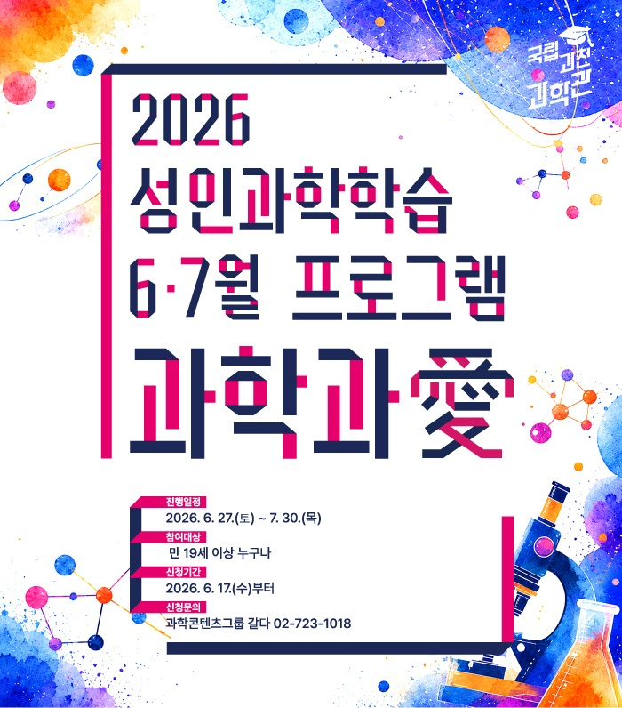
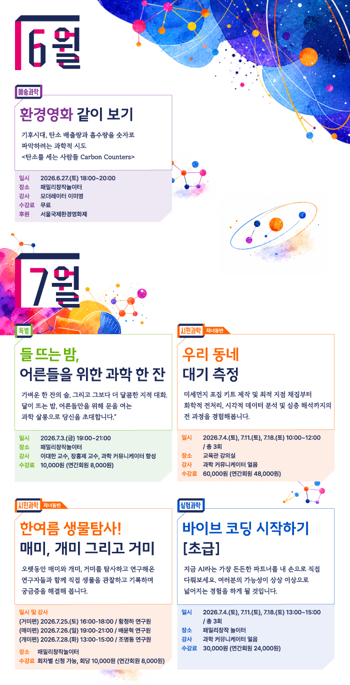
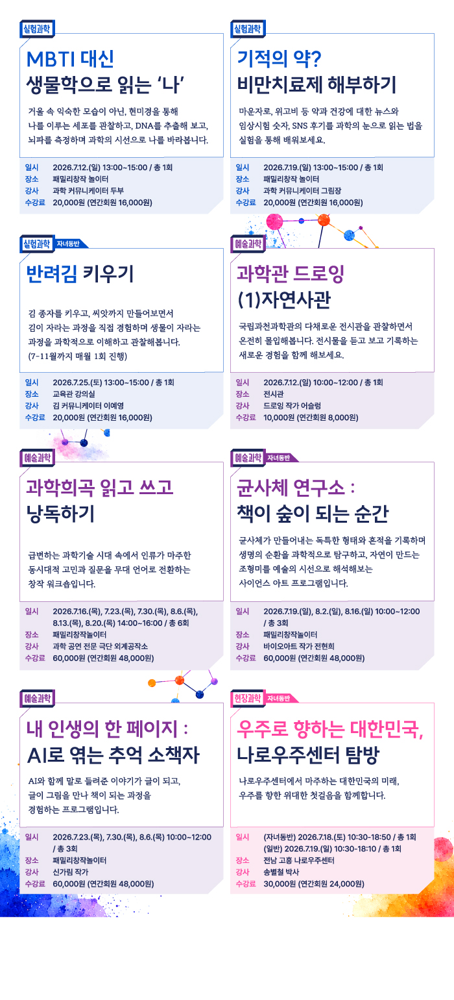

과학과애 · 어른을 위한 과학학습
국립과천과학관에서 만 19세 이상 성인을 대상으로 운영하는 과학학습 프로그램입니다. 실험, 예술, 시민과학과 현장 탐방을 통해 일상의 호기심을 구체적인 경험으로 연결합니다.
2026년 6·7월 프로그램
환경영화 같이 보기 : 기후시대, 탄소 배출량과 흡수량을 숫자로 파악하려는 과학적 시도 <탄소를 세는 사람들 Carbon Counters>
- 일자 : 2026.6.27.(토) 18:00~20:00
- 장소 : 패밀리창작놀이터
- 강사 : 모더레이터 이미영
- 수강료 : 무료
- 후원 : 서울국제환경영화제
들뜨는 밤, 어른들을 위한 과학 한 잔
"가벼운 한 잔의 술, 그리고 그보다 더 달콤한 지적 대화. 달이 뜨는 밤, 어른들만을 위해 문을 여는 과학 살롱으로 당신을 초대합니다."
- 일자 : 2026.7.3.(금) 19:00~21:00
- 장소 : 패밀리창작놀이터
- 강사 : 이대한 교수, 장홍제 교수, 과학 커뮤니케이터 항성
- 수강료 : 10,000원 (연간회원 8천원)
우리 동네 대기 측정 (자녀동반 가능)
미세먼지 포집 키트 제작 및 최적 지점 채집부터 화학적 전처리, 시각적 데이터 분석 및 심층 해석까지의 전 과정을 경험해봅니다.
- 일자 : 2026.7.4.(토), 7.11.(토), 7.18.(토) 10:00~12:00 / 총 3회
- 장소 : 교육관 강의실
- 강사 : 과학 커뮤니케이터 얼음
- 수강료 : 60,000원 (연간회원 48,000원)
한여름 생물탐사! 매미, 개미 그리고 거미 (자녀동반 가능)
오랫동안 매미와 개미, 거미를 탐사하고 연구해온 연구자들과 함께 직접 생물을 관찰하고 기록하며 궁금증을 해결해 봅니다.
- 일자 및 강사
(거미편) 2026.7.25.(토) 16:00-18:00 / 황청하 연구원
(매미편) 2026.7.26.(일) 19:00-21:00 / 배윤혁 연구원
(개미편) 2026.7.28.(화) 13:00-15:00 / 조명동 연구원
- 장소 : 패밀리창작놀이터
- 수강료 : 회당 10,000원, 총 30,000원
(회당 8,000원, 연간회원 24,000원)
바이브 코딩 시작하기 - 초급
지금 AI라는 가장 든든한 파트너를 내 손으로 직접 다뤄보세요. 여러분의 가능성이 상상 이상으로 넓어지는 경험을 하게 될 것입니다.
- 일자 : 2026.7.4.(토), 7.11.(토), 7.18.(토) 13:00~15:00 / 총 3회
- 장소 : 패밀리창작놀이터
- 강사 : 과학 커뮤니케이터 얼음
- 수강료 : 30,000원 (연간회원 24,000원)
MBTI 대신 생물학으로 읽는 ‘나’
거울 속 익숙한 모습이 아닌, 현미경을 통해 나를 이루는 세포를 관찰하고, DNA를 추출해 보고, 뇌파를 측정하며 과학의 시선으로 나를 바라봅니다.
- 일자 : 2026.7.12.(일) 13:00~15:00 / 총 1회
- 장소 : 패밀리창작놀이터
- 강사 : 과학 커뮤니케이터 두부
- 수강료 : 20,000원 (연간회원 16,000원)
기적의 약? 비만치료제 해부하기
마운자로, 위고비 등 약과 건강에 대한 뉴스와 임상시험 숫자, SNS 후기를 과학의 눈으로 읽는 법을 실험을 통해 배워보세요.
- 일자 : 2026.7.19.(일) 13:00~15:00 / 총 1회
- 장소 : 패밀리창작놀이터
- 강사 : 과학 커뮤니케이터 그림장
- 수강료 : 20,000원 (연간회원 16,000원)
반려김 키우기 (자녀동반 가능)
김 종자를 키우고, 씨앗까지 만들어보면서 김이 자라는 과정을 직접 경험하며 생물이 자라는 과정을 과학적으로 이해하고 관찰해봅니다. (7-11월까지 매월 1회 진행)
- 일자 : 2026.7.26.(일) 13:00~15:00 / 총 1회
- 장소 : 패밀리창작놀이터
- 강사 : 김 커뮤니케이터 이예영
- 수강료 : 20,000원 (연간회원 16,000원)
과학관 드로잉 (1) 자연사관
국립과천과학관의 다채로운 전시관을 관찰하면서 온전히 몰입해봅니다. 전시물을 듣고 보고 기록하는 새로운 경험을 함께 해보세요.
- 일자 : 2026.7.12.(일) 10:00~12:00 / 총 1회
- 장소 : 전시관
- 강사 : 드로잉 작가 어슬렁
- 수강료 : 10,000원 (연간회원 8,000원)
과학희곡 읽고 쓰고 낭독하기
급변하는 과학기술 시대 속에서 인류가 마주한 동시대적 고민과 질문을 무대 언어로 전환하는 창작 워크숍입니다.
- 일자 : 2026.7.16.(목), 7.23.(목), 7.30.(목), 8.6.(목), 8.13.(목), 8.20.(목) 14:00~16:00 / 총 6회
- 장소 : 패밀리창작놀이터
- 강사 : 과학 공연 전문 극단 외계공작소
- 수강료 : 60,000원 (연간회원 48,000원)
균사체 연구소 : 책이 숲이 되는 순간 (자녀동반 가능)
균사체가 만들어내는 독특한 형태와 흔적을 기록하며 생명의 순환을 과학적으로 탐구하고, 자연이 만드는 조형미를 예술의 시선으로 해석해보는 사이언스 아트 프로그램입니다.
- 일자 : 2026.7.19.(일), 8.2.(일), 8.16.(일) 10:00~12:00 / 총 3회
- 장소 : 패밀리창작놀이터
- 강사 : 바이오아트 작가 전현희
- 수강료 : 60,000원 (연간회원 48,000원)
내 인생의 한 페이지 : AI로 엮는 추억 소책자
AI와 함께 말로 들려준 이야기가 글이 되고, 글이 그림을 만나 책이 되는 과정을 경험하는 프로그램입니다.
- 일자 : 2026.7.23.(목), 7.30.(목), 8.6.(목) 10:00~12:00 / 총 3회
- 장소 : 패밀리창작놀이터
- 강사 : 신가림 작가
- 수강료 : 60,000원 (연간회원 48,000원)
우주로 향하는 대한민국, 나로우주센터 탐방 (자녀동반 가능)
나로우주센터에서 마주하는 대한민국의 미래, 우주를 향한 위대한 첫걸음을 함께합니다.
- 일자
(자녀동반) 2026.7.18.(토) 10:30~18:50 / 총 1회
(일반) 2026.7.19.(일) 10:30~18:10 / 총 1회
- 장소 : 전남 고흥 나로우주센터
- 강사 : 송별철 박사
- 수강료 : 30,000원 (연간회원 24,000원)
운영과 참여
운영기간은 2026년 6월 27일–7월 30일이며, 일부 연속 과정은 8월까지 이어집니다. 프로그램에 따라 장소·교육비·신청 마감일이 다릅니다.
교육 당일 전시관 무료 입장, 유료 수강생 당일 1회 무료 주차, 연간회원 교육비 20% 할인 혜택이 안내되었습니다. 5인 이상 단체는 운영사무국에 별도 문의할 수 있습니다.
프로그램 안내 이미지

